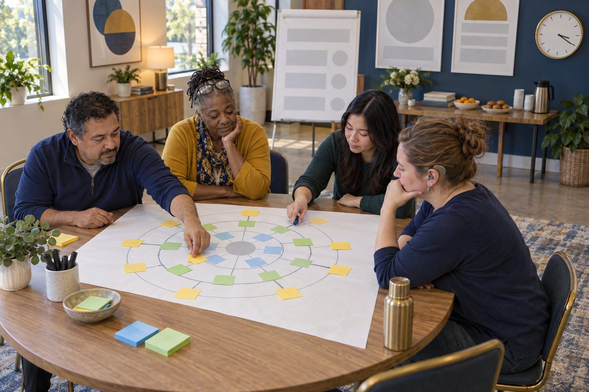

Professional learning · Teachers, Librarians, Coaches · 60 minutes
Ripple Out: A Futures Wheel for Learning
Tables take one plausible future headline about AI in school, map its ripples out three rings deep, and then work backward to what they should start doing this semester.
Arguments about whether a technology will arrive rarely change what anyone does on Monday. This session skips that argument. Each table gets a fictional, near-future headline grounded in something that already exists, and uses the Futures Wheel (a mapping tool Jerome Glenn introduced in 1971) to trace first-, second-, and third-order consequences. Tables color-code who benefits and who gets left out, then use backcasting, a planning method that starts from a preferred future and works backward, to name what they should be doing in classrooms and libraries this semester.
In this packet
- Handout A: Future Headline Cards (cut-apart cards)
- Handout B: Futures Wheel Template (worksheet)
- Handout C: Backcasting Planner (worksheet)
- Facilitator key (last page)
TCEA ELE indicators
- T1.3 I am aware of emerging technologies and their potential applications in education.
- AI2.2 I can identify potential ethical issues in AI applications and propose solutions.
- T3.3 I am aware of cultural differences and how they impact learning.
- AI5.2 I can use AI as a tool for innovation in educational projects and research.
Full facilitator guide: mglearn.github.io/eles/activities/ripple-out-futures-wheel.html
Handout A for Ripple Out: A Futures Wheel for Learning
Future Headline Cards
Cut apart; one card per table. All places and organizations are fictional. The backs are the facilitator key: the present-day signal that makes each headline plausible. Print them on a separate sheet.
Sheet 1 of 2
Card 1 · 2029
Pecan Creek ISD Retires the Take-Home Essay. Writing Now Happens in Class, in Drafts, and Out Loud.
Card 2 · 2030
Every Student at Cedar Bend High Now Has an AI Tutor. Families Ask Who Reads the Chat Logs.
Card 3 · 2031
Live Translation Earbuds Arrive in Lone Oak Classrooms. Newcomer Students Join Discussions on Day One.
Card 4 · 2032
State Board Requires a "How I Used AI" Note on Any Student Work Submitted for Credit.
Card 5 · 2030
Hill Country Community College Replaces Most Final Exams With Recorded Oral Defenses.
Card 6 · 2033
Smart Glasses Banned During Tests at Mesquite Springs Middle. Students With Low Vision Ask for an Exception.
Card 7 · 2035
Kindergartners at Bluebonnet Elementary Learn to Say "Let's Check" Before Believing a Talking Toy.
Card 8 · 2029
Families in Caddo Flats Still Waiting for Home Internet Fast Enough for AI Homework Helpers.
Handout A for Ripple Out: A Futures Wheel for Learning
Future Headline Cards
Cut apart; one card per table. All places and organizations are fictional. The backs are the facilitator key: the present-day signal that makes each headline plausible. Print them on a separate sheet.
Sheet 2 of 2
Card 9 · 2031
Pecan Creek Teachers Get Friday Afternoons Back as AI Drafts Lesson Materials. Teachers Ask Who Checks the Drafts.
Card 10 · 2039
The Class of 2039 Graduates Having Never Known School Without AI. Colleges Rethink What a Transcript Shows.
Handout B for Ripple Out: A Futures Wheel for Learning
Futures Wheel Template
Headline in the center. Ring 1 = direct effects. Ring 2 = effects of those effects. Ring 3 = ripples of the ripples. Color key: green = benefits someone, orange = leaves someone out or harms them, blue = depends on choices we make now.
Our headline (copy it exactly, with the year):
Draw the wheel. Headline in a center circle, at least four spokes to Ring 1, two spokes from each Ring 1 bubble to Ring 2, and at least three Ring 3 bubbles. Color every bubble using the key.
Ring 1: the direct effects we listed (who is in each one?):
Ring 3: the ripple that surprised us most, and why:
Orange bubbles: who gets left out or harmed in this future?
Blue bubbles: which outcomes depend on choices educators make now? (★ = most probable, ♥ = what we'd prefer)
Handout C for Ripple Out: A Futures Wheel for Learning
Backcasting Planner
Start at the future you'd prefer and work backward, one step at a time, until you reach this semester.
The preferred future: describe the best realistic version of your headline's world in one or two sentences. Who is better off?
One year before that: what would already be true in classrooms, libraries, and homes?
Two or three years before that: what habits would students and teachers already have?
This semester: two or three things I will do (a lesson, a habit, a conversation, a question I ask about a tool):
Which orange bubble does my plan address, and who might it still miss?
The evidence that would show it's working (student work, family feedback, something I can see):
Partner question: "What would you stop doing to make time for this?"
Facilitator only for Ripple Out: A Futures Wheel for Learning
Answer key and notes
Handout A: Future Headline Cards
- Card 1 · 2029
- Signal: generative AI chatbots can produce fluent essays on demand, and many teachers have already moved more writing into class time, conferences, and drafts that show process.
- Card 2 · 2030
- Signal: AI tutoring tools are being piloted in schools, and many AI tools keep conversation history. Student privacy laws cover education records, but families often don't know what a given tool stores.
- Card 3 · 2031
- Signal: real-time speech translation already exists in some phones and earbuds. Accuracy varies by language, accent, and background noise.
- Card 4 · 2032
- Signal: some schools, universities, and publishers already ask for AI disclosure statements, and some platforms attach labels or content credentials to AI-generated images.
- Card 5 · 2030
- Signal: some instructors have returned to oral exams, in-class assessment, and process portfolios as take-home work becomes harder to evaluate.
- Card 6 · 2033
- Signal: consumer smart glasses with cameras and AI assistants are on the market, and assistive apps can already describe surroundings aloud for people who are blind or have low vision.
- Card 7 · 2035
- Signal: toys and smart speakers with conversational features are sold for children, and child advocates have raised concerns about privacy and about young children trusting what a device says.
- Card 8 · 2029
- Signal: home broadband access still varies by income and geography, and many AI tools need a steady connection to work.
- Card 9 · 2031
- Signal: many teachers already use AI chatbots to draft lesson plans, rubrics, and family letters. The drafts still need checking for accuracy, bias, and fit for the students in the room.
- Card 10 · 2039
- Signal: children starting kindergarten now will spend their whole school career with generative AI available, and colleges and employers are already debating how to judge what a student can do without it.